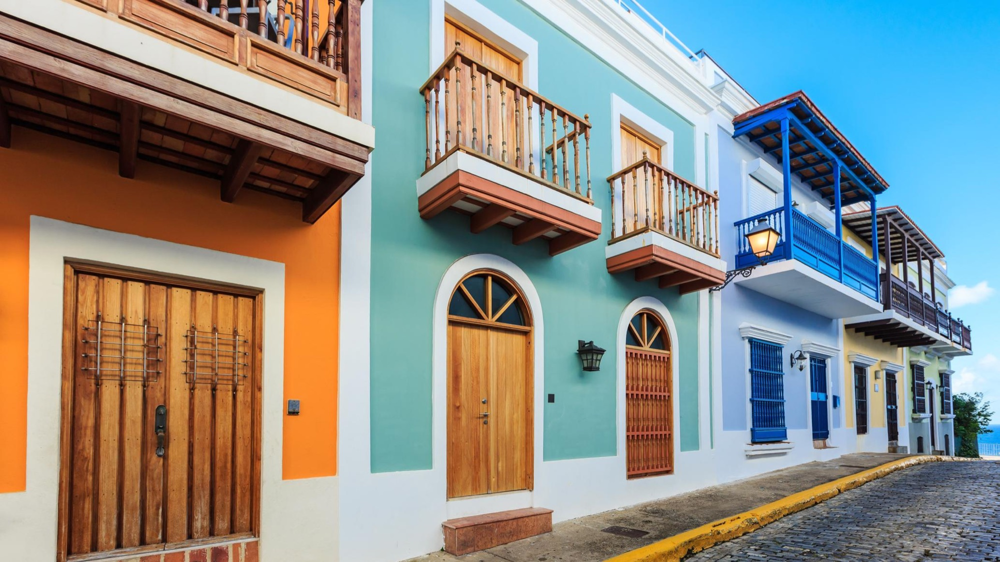

Mofongo con Camarones
Fried green plantain mashed with garlic and pork cracklings, crowned with shrimp in a garlic-tomato sofrito.

PURAWEPA
Puerto Rican street food, made the way abuela meant it — no shortcuts, no fusion, no apologies.
NUESTRA HISTORIA
Purawepa started with one recipe box, carried from Ponce to a parking lot, because the food we grew up eating was harder to find here than it should have been. Every dish on this truck is one we ate before we could walk — mofongo pounded by hand, pernil that takes a whole day, alcapurrias shaped the way our tías shaped them. Nothing here is reinvented. It's just cooked right, and served fast.
FIND US
Old San Juan, near Plaza de Armas — follow @purawepa for the day's exact spot.